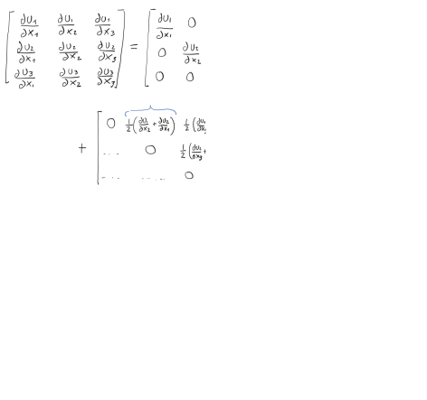

Subsections
Download the file LostHills.xls.
We would like to know the state of stress in the subsurface and its influence on a hydraulic fracture completion.
At every depth (and data-point) along the vertical well:
- Compute (and plot) total vertical stress as a function of depth (you may assume homogeneous rock above 1,750 ft), and overpressure parameter.
- Compute dynamic Poisson’s ratio and dynamic Young’s modulus from compressive and shear slowness (be careful with unit conversion).
- Compute static Young's modulus using a coefficient
 .
.
- Compute (and plot) static plane strain modulus
 (Poisson ratio remains the same).
(Poisson ratio remains the same).
- Compute (and plot) horizontal stress assuming theory of elasticity and no tectonic strains.
- Compute (and plot) total maximum and minimum horizontal stress assuming theory of elasticity and
and
 .
.
- The pay-zone is between 2,100 ft and 2,450 ft. A hydraulic fracture is planned to be executed with a vertical well at a depth between 2,130 ft and 2,160 ft. What will be the height of this fracture? Will it reach out to the entire pay zone?
Figure 1.4:
Bulk rock mass density, P-wave slowness, and S-wave slowness along a vertical well in the Lost Hills field.
|
VTI compliance matrix (3 - vertical direction perpendicular to bedding):
where and
 and
and  is not related to the other parameters.
is not related to the other parameters.
In terms of stiffness coefficients:
VTI stiffness matrix (3 - vertical direction perpendicular to bedding):
![\begin{displaymath}%compliance matrix
\left[
\begin{array}{c}
\sigma_{11} \\
\...
...\
2 \varepsilon_{13} \\
2 \varepsilon_{12}
\end{array}\right]\end{displaymath}](img40.svg) |
(1.2) |
or in terms of Young moduli and Poisson ratios

The parameter  is independent of all other parameters.
is independent of all other parameters.
![$\displaystyle E_h = \frac{(C_{11}-C_{12}) \left[ C_{33}(C_{11}+C_{12})-2\: C_{13}^2 \right]}{C_{11}C_{33}–C_{13}^2} $](img34.svg)


![$\displaystyle C_{11} = \left[ \frac{1}{(1-\nu_h) E_v - 2 \nu_v^2 E_h} \right] \left( \frac{E_h E_v - \nu_v^2 E_h^2}{1+\nu_h} \right) $](img41.svg)
![$\displaystyle C_{33} = \left[ \frac{1}{(1-\nu_h) E_v - 2 \nu_v^2 E_h} \right] (E_v^2 - \nu_h E_v^2) $](img42.svg)
![$\displaystyle C_{13} = \left[ \frac{1}{(1-\nu_h) E_v - 2 \nu_v^2 E_h} \right] (\nu_v E_h E_v) $](img44.svg)